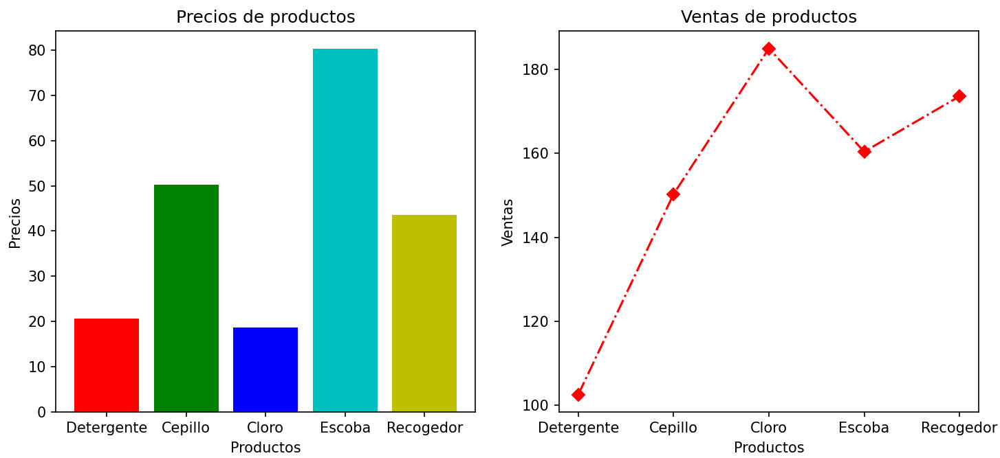

.

Descripción:
- Desarrolla, algunos problemas que implican el uso de listas
y gráficas con matplotlib.

Objetivos:
- Aplicar el concepto de listas
y gráficos en la solución de problemas en Python.

Modalidad:

Instrucciones:
Escribe tu nombre y matrícula al inicio de tu
programa: print("Nombre
Matrícula")
Crea las siguientes funciones:
-
La función
estadistica_descriptiva (lista)
que reciba como parámetro de entrada una lista de calificaciones
del semestre pasado, de los tres periodos, mínimo 10 calificaciones.
La función deberá desplegar la siguiente información, utiliza las
funciones vistas en clase.
- Máxima calificación
- Mínima calificación
- Promedio
- Mediana
- Desviación estándar
- ¿Cuántos 100 obtuviste?
-
¿Cuántos 80 obtuviste?
- Eres el administrador de una empresa de
ventas de productos de importación variados. Se te solicita crear
dos gráficas con la información de tus principales productos, sus
precios y sus ventas.
-
En la función
grafica1 ( ):
-
Crea las siguientes listas:
-
Una lista llamada productos que incluya tus principales productos
(mínimo 5)
- Una
lista llamada precios que incluya los
precis de los productos.
- Una
lista llamada ventas que incluya las
ventas de los productos en el mes de Octubre.
- Crea un gráfico que muestre en el
eje de las x's el nombre de los productos y en
el eje de las y's los precios.
- Usa el gráfico de barras
y los colores que prefieras para cada barra.
- Coloca un título a la gráfica que
diga "Precios de productos".
- Coloca una leyenda en el eje de
las x´s que diga "Productos".
-
Coloca una leyenda en el eje de
las y's que diga "Precios".
-
En la función
grafica2 ( ):
-
Crea las siguientes listas:
-
Una lista llamada
productos que incluya tus principales productos
(mínimo 5)
- Una
lista llamada precios que incluya los
precis de los productos.
- Una
lista llamada ventas que incluya las
ventas de los productos en el mes de Octubre.
- Crea un gráfico que muestre en el
eje de las x's el nombre de los productos y en
el eje de las y's las ventas.
- Usa el gráfico de línea,
con el tipo de línea y el color que prefieras (se creativo).
- Coloca una leyenda en el eje de
las x´s que diga "Productos".
- Coloca una leyenda en el eje de
las y's que diga "Ventas".
- Coloca un título a la gráfica que
diga "Ventas de productos"
-
En la función
grafica3 ( ):
-
Crea las siguientes listas:
-
Una lista llamada
productos que incluya tus principales productos
(mínimo 5)
- Una
lista llamada precios que incluya los
precis de los productos.
- Una
lista llamada ventas que incluya las
ventas de los productos en el mes de Octubre.
- Crea un solo gráfico que muestre las dos
subgráficas, una gráfica que corresponda con "Precios de
productos" y otro gráfico que corresponda con
"Ventas de productos". Un ejemplo podría ser como se
muestra a continuación:

-
La función menu ()
que despliegue el siguiente menú en pantalla:
1. Estadística descriptiva
2. Gráfica
precios de productos
3. Gráfica ventas de productos
4. Gráfica precios y
ventas de productos
5. Salir
-
La función
main ()
que utilice la función menu para desplegar el menú
correspondiente y de acuerdo a la opción seleccionada por el
usuario le dé la oportunidad de ejecutar cualquiera de las
funciones que han sido construidas. Utiliza el estatuto de control
if anidado.
Recuerda que la captura de datos debe
ser realizada en la sección del main. Debes utilizar el ciclo
while para que se cicle el programa hasta que el usuario
introduzca la opción de salir. Valida
opciones inválidas.
-
En el
script principal
manda llamar a la función main.

Guarda tu archivo como
act6_matrícula.py

Especificaciones
de entrega:
|